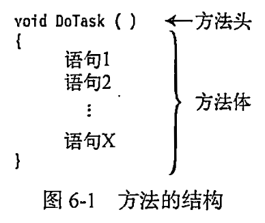
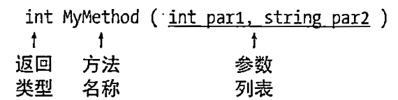
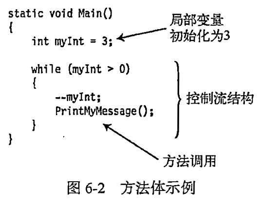

0709
方法的结构
方法主要有两个部分：
- 方法头
- 方法体

方法头是什么
方法头指定方法的特征。包括：
- 方法是否返回数据，如果返回，返回什么类型；
- 方法的名称；
- 哪种类型的数据可以传递给方法或从方法返回，以及应如何处理这些数据。

示例
方法体是什么
- 方法体是一个语句块。
- 方法体是花括号包裹起来的语句序列。
方法体包含以下项目：
- 局部变量
- 局部函数
- 控制流结构
- 方法调用
- 内嵌的块

局部变量是什么
- 字段通常保存和对象状态有关的数据。
- 局部变量通常用于保存局部的或临时的计算数据。
- 局部变量的存在和生存期仅限于创建它的块及其内嵌的块。从声明它的那一点开始存在，在块完成执行时结束存在。

声明局部变量的语法是什么
可以在方法体内任意位置声明局部变量，但必须在使用它们之前声明。
示例:两个局部变量的声明和使用请谈谈var关键字的用法
- 编译器可以从书适合语句的右侧推断出来时，声明的开始部分包含的显式类型是多余的。
- 为了避免冗余，可以在变量声明的开始部分显式类型名的位置使用新的关键字var
- var关键字不表示特殊变量，它只是语法上的速记。
- var关键字表示任何可以从初始化语句的右边推断出的类型。
- 使用var关键字的条件
- 只能用于局部变量，不能用于字段；
- 只能在变量声明中包含初始化时使用
- 一旦编译器推断出变量的类型，它就是固定且不能更改的。
嵌套块中的局部变量
方法体内可以嵌套其他的块。
- 可以有任意数量的块
- 局部变量可以在嵌套块的内部声明，并且和所有的局部变量一样，它们的生存期和可见性仅限于声明它们的块及其内嵌块。
控制流是什么
术语控制流指的是程序从头到尾的执行流程。
- 默认情况下，程序执行顺序地从一条语句到下一条语句。
- 控制流语句允许你改变执行的顺序。
- 常见的控制语句包括：
- 选择语句
- 迭代语句
- 跳转语句
我学习了C#图解教程第5章：类的基本概念，第6章：方法 第7章：深入理解类。请给我出20道应用题
方法调用
返回值
返回语句和void方法
局部函数
参数
值参数
引用参数
引用类型作为值参考数和引用数
输出参数
参数数组
参数类型总结
方法重载
命名参数
可选参数
栈帧
递归
以下是20道基于C#方法概念的应用题，涵盖参数传递、方法重载、可选参数、局部函数等核心知识点：
- 值参数与引用参数
创建SwapService类，包含两个方法： SwapByValue(int a, int b)（值参数）-
SwapByRef(ref int a, ref int b)（引用参数）
调用方法验证值参数交换是否影响原始变量。 -
输出参数应用
实现TryDivide方法：接受两个整数，使用out参数返回商和余数。当除数为0时返回false。测试(10,3)和(5,0)两种情况。 -
参数数组实践
创建MathUtil.Sum(params int[] values)方法，计算任意数量整数的和。分别测试Sum(1,2)和Sum(1,2,3,4,5)。 -
可选参数方法
设计GreetingGenerator类：
string Generate(string name, bool formal = false, string suffix = "!")
当formal为true时返回"Dear [name][suffix]"，否则返回"Hi [name][suffix]"。测试不同参数组合。 -
命名参数调用
使用上题的Generate方法，通过命名参数调用：
Generate(suffix: "?", name: "Alice", formal: true) -
方法重载实践
在Printer类中创建三个重载方法： Print(int number)Print(double number)-
Print(string text, int count)
调用Print(5),Print(3.14),Print("Hello", 3) -
表达式体方法
用表达式体语法实现： bool IsEven(int num) => num % 2 == 0;-
double CircleArea(double r) => Math.PI * r * r;
测试IsEven(4)和CircleArea(1) -
迭代器方法
创建NumberGenerator.GetEvenSequence(int max)方法，使用yield return生成所有≤max的正偶数。用foreach遍历输出≤10的偶数。 -
局部函数应用
测试Factorial(5)
在Factorial方法中定义局部递归函数计算阶乘：
-
扩展方法实践
为string类型创建扩展方法：
public static int WordCount(this string str) => str.Split(' ').Length;
测试"Hello world".WordCount() -
ref局部变量
实现ArrayUtil.FindFirstEven方法：在整数数组中找到首个偶数，通过ref return返回其引用，并通过该引用修改原数组值。 -
in参数修饰符
创建DistanceCalculator：
public double Euclidean(in Point p1, in Point p2)
使用in参数计算两点欧氏距离（防止结构体复制） -
方法重载冲突
创建含以下重载的类：Process(int num)Process(double num)
调用Process(10)和Process(5.5)后，再调用Process(10L)观察结果
-
条件方法
在DEBUG/RELEASE模式下测试调用
使用[Conditional("DEBUG")]特性创建DebugLogger.Log方法：
-
元组返回类型
实现MinMaxFinder方法：
public (int min, int max) FindMinMax(int[] data)
返回数组中的最小值和最大值。测试数组[3,1,9,5] -
异常处理方法
测试输入"123"和"abc"
创建SafeParseInt方法：
-
递归方法
实现Recursion.Fibonacci(n)方法递归计算斐波那契数列第n项。测试n=6（结果应为8） -
方法参数默认值
设计Timer类：
public void Start(int interval = 1000, int duration = 5000)
验证调用Start()、Start(500)和Start(interval:200, duration:10000) -
静态局部函数
注意静态局部函数不能访问外部变量
修改阶乘方法，将局部函数标记为static：
-
综合应用：购物车
设计ShoppingCart类：- 方法
AddItem(string name, double price) - 方法
AddItems(params (string, double)[] items) - 方法
ApplyDiscount(double percent = 10.0) - 方法
CalculateTotal()
测试添加商品并应用折扣
- 方法
每个题目聚焦方法的不同特性，通过实现和测试深入理解参数传递机制、方法设计技巧及C#7.0+的新特性。